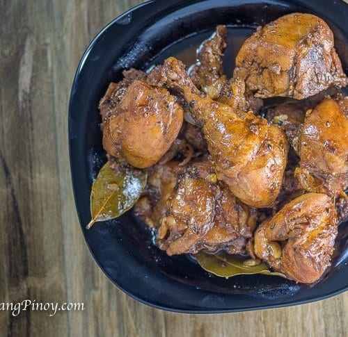

Chicken Adobo

Description
Chicken Adobo is a type of Filipino chicken stew. Chicken pieces are marinated in soy sauce and spices, pan-fried, and stewed until tender. The dish gained popularity because of its delicious taste and ease in preparation.
A dish that is classically and quintessentially Pinoy, chicken adobo is a dish that is beloved by many across the country. While there have been several variations of adobo across the years, chicken adobo remains one of the most popular –– and for good reason!
Ingredients
- 2 lbs chicken cut into serving pieces
- 3 pieces dried bay leaves
- 8 tablespoons soy sauce
- 4 tablespoons white vinegar
- 5 cloves garlic crushed
- 1 1/2 cups water
- 3 tablespoons cooking oil
- 1 teaspoon sugar
- 1/4 teaspoon salt (optional)
- 1 teaspoon whole peppercorn
Steps
- Combine chicken, soy sauce, and garlic in a large bowl. Mix well. Marinate the chicken for at least 1 hour. Note: the longer the time, the better
- Heat a cooking pot. Pour cooking oil.
- When the oil is hot enough, pan-fry the marinated chicken for 2 minutes per side.
- Pour-in the remaining marinade, including garlic. Add water. Bring to a boil
- Add dried bay leaves and whole peppercorn. Simmer for 30 minutes or until the chicken gets tender
- Add vinegar. Stir and cook for 10 minutes.
- Put-in the sugar, and salt. Stir and turn the heat off.Serve hot. Share and Enjoy!